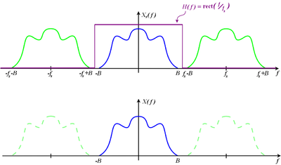
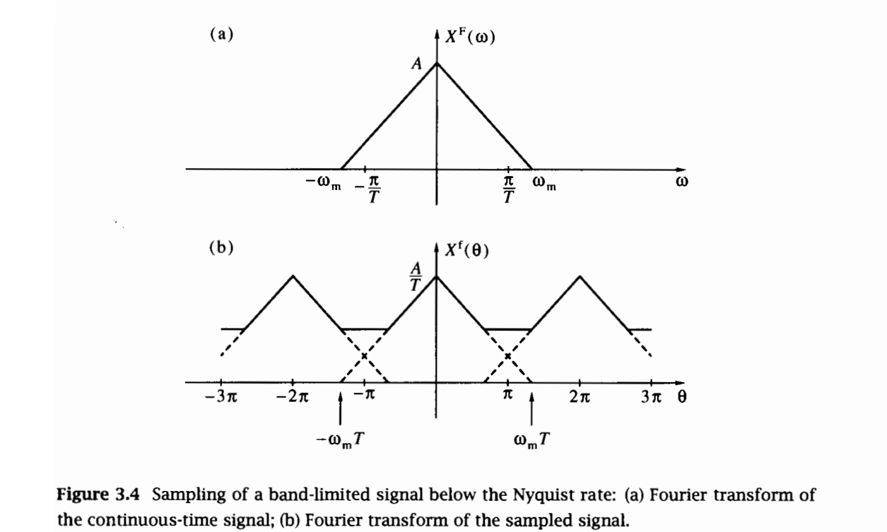
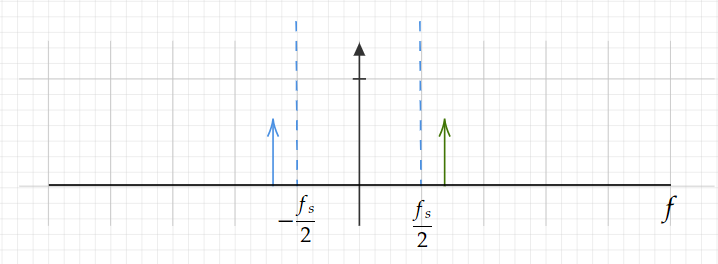
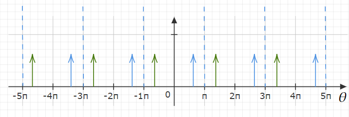
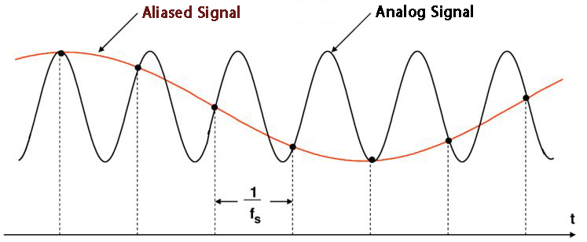
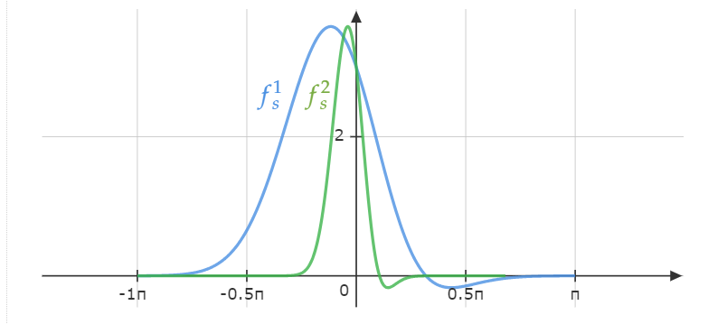
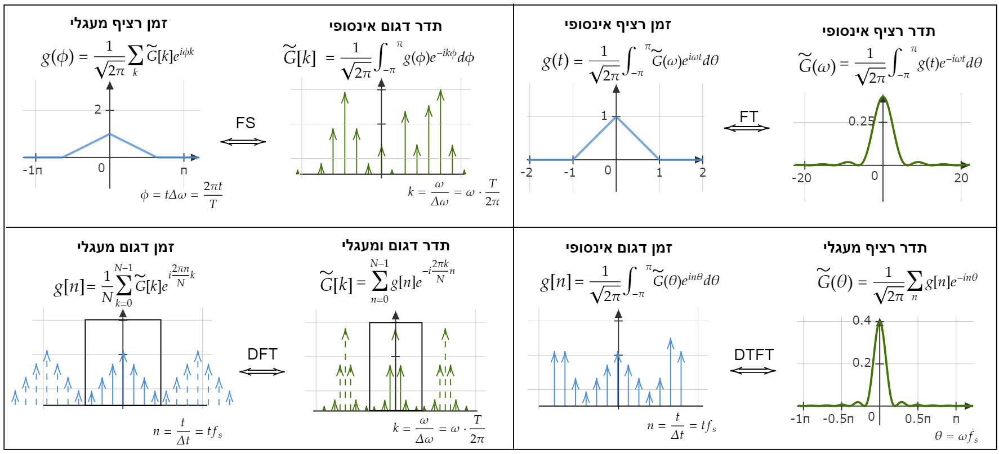

דגימה#
אמ;לק
ניתן לשחזר את האות \(V\left(t\right)\) באופן מושלם מתוך הדגימות \(V_{n}\) על ידי הגדרה של האות הדגום
וקונבולוציה שלו (אינטרפולציה) עם הפונקצייה \(sinc\left(f_{s}t\right)=\frac{\sin\left(\pi f_{s}t\right)}{\pi f_{s}t}\) במידה ותדר הדגימה מקיים \(f_{max}<\frac{f_{s}}{2}\)
כלומר
בנוסף נקבל כי האות \(\tilde{V}_{s}\left(\omega\right)\) הוא מחזורי. בשביל הנוחות נגדיר את האות:
אם נגביל את כמות הדגימות ל-\(N\) דגימות (כלומר אורך האות שלנו הוא \(n\Delta t\)) נקבל כי האות \(\tilde{V}\left(\theta\right)\) יהיה דגום \(N\) פעמים. הקשר בין הדגימות בזמן לדגימות בתדר הוא:
מרחק בין שתי דגימות בזמן - \(\Delta t=\frac{1}{f_{s}}\)
מרחק בין שתי דגימות בתדר - \(\Delta\omega=\frac{2\pi}{N\Delta t}=\frac{2\pi}{T}\)
תחום הזמן - \(t\in\left[0,T\right]\)
תחום התדרים - \(\omega\in\left[-\pi f_{s},\pi f_{s}\right]\)
קיבלנו מסקנה חשובה:
דגימה מהירה יותר משפרת רזולוציה בזמן ואת טווח התדרים דגימה ארוכה יותר משפרת את רזולוציית התדרים ואת טווח הזמנים
נתחיל מהתהליך של הדגימה וניתן על ההתחלה את התוצאה הכי חשובה בתחום
משפט הדגימה של נייקוויסט-שאנון#
אות \(V\left(t\right)\) ניתן לשחזור במדוייק מתוך דגימותיו \(V_{n}=V\left(t_{n}\right)=V\left(n\cdot\Delta t\right)=V\left(\frac{n}{f_{s}}\right)\) אם:
יש תדר מקסימלי - \(\tilde{V}\left(\left|f\right|>f_{max}\right)=0\)
התדר המקסימלי הוא פחות מחצי תדר הדגימה - \(f_{max}<\frac{f_{s}}{2}\)
במקרה זה ניתן לשחזר את האות בצורה הבאה:
וואו וואו וואו לא ניתן אלא להתרשם!
קצת אינטואיציה
אם אומרים לנו שתדר הדגימה מוגבל זה אומר משהו על השינוי של הפונקציה. כלומר שהיא משתנה לאט אם היא משתנה לאט ואנחנו דוגמים אותה מהר נוכל לעשות אינטרפולציה בין נקודות הדגימה כדי לשחזר את הפונקציה המקורית. אם נדגום מהר יותר ויותר אפילו אינטרפולציה לינארית בסוף תביא אותנו לפונקציה המקורית אלא שנצטרך תדר דגימה אינסופי כדי לשחזר בדיוק
כאן נכנס היופי של המשפט, ישנן פונקציות שהן חסומות בתדר. כלומר ניתן לייצג אותן בבסיס כלשהו (בסיס התדר) כפונקציות על קטע סגור. אבל כבר נתקלנו בעבר בסיטואציה כזו… טור פורייה!
טור פורייה של פונקציה על קטע סגור הוא בדיוק אותו הדבר, יצוג של פונקציה לכאורה אינסופית בעזרת מספר (אינסופי אך ספיר) של מקדמים.
האמת שזה בדיוק הסיפור. תחשבו על “טור” פורייה של הייצוג של הפונקצייה שלנו בתדר. הוא משהו מהצורה:
נשים לב שהפונקציה שלנו יכולה להיות מוגדרת על כל קטע \(\left[-\frac{f_{s}}{2},\frac{f_{s}}{2}\right]\) באורך \(f_{s}\) כל עוד \(f_{max}<\frac{f_{s}}{2}\)
נוכל לעשות פורייה הפוך בחזרה למרחב הזמן ולקבל
או במילים אחרות:
“הוכחה”#
נסתכל על האות הדגום:
ונעשה לו טרנספורם פורייה
האם ניתן לשחזר את \(\tilde{V}\left(\omega\right)\) מתוך \(\tilde{V}_{s}\left(\omega\right)\)?
כן אבל רק אם \(f_{max}<\frac{f_{s}}{2}\) למה? נסתכל בתמונה:

האות הכחול הוא מה שאנחנו רוצים. מה שיש לנו זה את האות הכחול קונבולוציה עם מסרק (רכבת הלמים). שזה האות בירוק. נוכל לשחזר את האות הכחול רק אם לא תהיה חפיפה בין השכפולים. נשים לב שהמרחק בין שכפולים הוא \(2\pi f_{s}\) בעוד הרוחב של האות שלנו הוא \(2\pi\cdot\left(2f_{max}\right)\) ולכן אנחנו חייבים לעמוד בתנאי \(f_{max}<\frac{f_{s}}{2}\)
איך נשחזר את האות? על ידי LPF מלבני. קיבלנו כי:
נוח לראות כאן כי:
מכפלה בחלון בתדר היא קונבולוציה עם sinc בזמן. נעשה פורייה הפוך:
ושוב קיבלנו:
שחזור אידאלי - סיכום
ניתן לשחזר את האות \(V\left(t\right)\) באופן מושלם מתוך הדגימות \(V_{n}\) על ידי הגדרה של האות הדגום \(V_{s}\left(t\right)=\sum_{n=-\infty}^{\infty}V_{n}\delta\left(t-n\Delta t\right)\) וקונבולוציה שלו (אינטרפולציה) עם הפונקצייה \(sinc\left(f_{s}t\right)=\frac{\sin\left(\pi f_{s}t\right)}{\pi f_{s}t}\) במידה ותדר הדגימה מקיים \(f_{max}<\frac{f_{s}}{2}\)
הפונקציה \(\tilde{V}\left(\theta\right)\)#
ראינו כי הפונקציה עבור הפונקציה \(V_{s}\left(t\right)=\sum_{n=-\infty}^{\infty}V_{n}\delta\left(t-n\Delta t\right)\) נקבל פונקציה מחזורית בתדר \(\tilde{V}_{s}\left(\omega\right)=f_{s}\tilde{V}\left(\omega\right)\ast comb\left(\frac{\omega}{2\pi f_{s}}\right)\)
על מנת שיהיה לנו נוח ועל מנת להדגיש שהפונקציה \(\tilde{V}_{s}\left(\omega\right)\) היא מחזורית נגדיר:
מה הפונקציה הזו שווה? נוכל לעשות פורייה ישירות ולקבל:
כלומר:
הפונקציה \(\tilde{V}\left(\theta\right)\) מוגדרת על טבעת. בקלות רואים כי \(\tilde{V}\left(\theta+2\pi\right)=\tilde{V}\left(\theta\right)\)
Alias#
מה קורה אם אנחנו דוגמים אות אשר לא עומד בתנאי שלנו? כלומר שיש לו תדרים גבוהים יותר מ-\(\frac{f_{s}}{2}\). עכשיו יש לנו ממש דרך מתמטית לחשוב על תהליך הגדימה. דגימה היא הכפלה ברכבת הלמים. זה אומר שבתדר זה קונבולוציה עם רכבת הלמים.
איך זה נראה?  קרדיט [1]
מה שאנחנו רואים בתמונה הוא שהתדרים מעל התדר \(\frac{f_{s}}{2}\) התקפלו בחזרה. על מנת להבין את זה קצת יותר טוב נתחיל מדוגמה פשוטה:
בתדר כמובן שכל מה שיש לנו הוא שתי דלתאות. איך נראה האות הדגום?
ולכן בתדר:
נסתכל רק על התחום \(\left[-\frac{f_{s}}{2},\frac{f_{s}}{2}\right]\)
במידה ו-\(f_{0}<\frac{f_{s}}{2}\) אז אין משהו מיוחד ונקבל כי:
כלומר שאנחנו יכולים לשחזר את האות שלנו על ידי LPF (בתדר).
אבל מה אם לדוגמה \(f_{0}=\frac{f_{s}}{2}+\Delta f\)
במקרה הזה מה שיהיה בתחום שאנחנו מסתכלים עליו הוא אחד מההעתקים שמגיע מהקונבולוציה בפונקציית המסרק איפה בדיוק הוא יהיה? פונקציית המסרק בתדר היא במרווחים של \(2\pi f_{s}\).
מקודם היו לנו שני תדרים \(\pm\omega_{0}=\pm\left(2\pi\frac{f_{s}}{2}+2\pi\Delta f\right)\)
כל אחד מהם הולך להיות משוכפל אינסוף פעמים בקפיצות של \(2\pi f_{s}\). איזה מהשכפולים הולך להיות בתוך הקטע שאנחנו מסתכלים עליו? זה תלוי בגודל של \(\Delta f\) כמובן. נניח לרגע שהוא קטן ונקבל:
כלומר דווקא התדר השלילי נמצא עכשיו בתחום החיובי של הטווח שלנו והתדר החיובי הוא בתחום השלילי. התוצאה היא:
שימו לב שקיבלנו שהתדר “התקפל” סביב קצה התחום שלנו.
יהיה יותר קל להבין בסרטוט
 
אתם יכולים לראות שקיבלנו קיפול של התדרים. למה הציר נראה כמו שהוא נראה?
בשביל נוחות נהוג להציג את הפונקציה הדגומה כ-\(\tilde{V}\left(\theta\right)\equiv\tilde{V}_{s}\left(\omega=\frac{\theta}{\Delta t}\right)\) כמו מקודם
את התופעה של קיפול תדרים אנחנו רואים גם במרחב הזמן:

שימו לב שזה לא באמת שקיבלנו את התדר הנמוך אחרי הדגימה. כל מה שיש לנו זה את הדגימות. אבל זה אומר שלדגום את שני גלי הקוסינוס האלו נותן את אותה תוצאה בדיוק. ולא ניתן להבחין בינהם אחרי הדגימה. זה בגלל שהקוסינוס בתדר הגבוה (מעל \(\frac{f_{s}}{2}\)) יתקפל לתדר של הקוסינוס בתדר הנמוך.
דוגמה יחסית נפוצה לתופעה היא בסרטוני ווידאו. אם מצלמים משהו שמסתובב בתדר מסויים אבל דוגמים אותו ב-30FPS. מה יקרה אם הוא מסתובב ב3000RPS? זה אומר שכל פעם שאנחנו מצלמים הוא עושה מספר שלם של סיבובים וזה יראה כאילו הוא לא זז!
דוגמה מגניבה לזה אפשר לראות ב-GIF הבא:
זה בדיוק קיפול תדרים רק שהתדר שלנו מתקפל לתדר 0.
Anti Alias Filter#
מה אם יש לנו אות שכן עומד בתנאי הדגימה שלנו אבל יש לנו רעש או אותות אחרים בתדרים גבוהים יותר?
נבצע קודם LPF כך שכל התדרים שלא בתחום של \(\left[-\frac{f_{s}}{2},\frac{f_{s}}{2}\right]\) יתאפסו ואז נדגום. הפילטר הזה נקרא anti alias כי הוא דואג לנו שלא יהיו לנו קיפולים לא רצויים בדגימה.
שימו לב שלמעשה במקלט קוהרנטי כבר יש לנו LPF לכל אחד מהערוצים I ו-Q. נוכל להשתמש בו בתור ה-anti alias filter. לפני שאנחנו מעבירים את הערוצים לדוגם.
העלאה של תדר הדגימה#
נניח שיש לנו אות חסום בתדר. כלומר יש לו תדר מקסימלי \(f_{max}\). איך נראה האות בתדר אחרי שדוגמים אותו בשני תדרי דגימה שונים \(f_{s}^{1},f_{s}^{2}\). נניח שמתקיים:
איך יראו הפונקציות \(\tilde{V}\left(\theta\right)\) עבור שני תדרי הדגימה

מה שקורה הוא שלקחנו את הפונקציה הכחולה והוספנו לה אפסים משני הצדדים. משום שכשעלינו בתדר הדגימה אנחנו “רואים” תדרים יותר גבוהים. הפונקציה הירוקה צרה יותר משום שאת שתיהן אנחנו מציירים בעזרת הפרמטר \(\theta\equiv\frac{\omega}{f_{s}}\) רק שלכל פונקציה יש תדר דגימה שונה.
Tip
דיגמה בתדר גבוה יותר \(\Longleftrightarrow\) לרפד באפסים בתדר
זה לקח חשוב לזכור ונחזור אליו בהמשך
מספר דגימות סופי#
אנחנו כבר מתחילים להריח משהו שאנחנו יכולים לעשות איתו משהו במחשב. אבל עם כל הכבוד לדגימות, כדאי שגם המספר שלהן יהיה סופי. החוק הפשוט יהיה כזה. במקום לומר שכמות הדגימות שלנו היא סופית נאמר שיש לנו כמות סופית של דגימות שהן לא 0. כלומר אם קיבלנו דגימה באורך \(N\) נחשוב עליה בתור דגימה אינסופית מרופדת באפסים לשני הכיוונים.
למה בכלל לעשות את זה? התשובה היא שכבר פיתחנו כלים לעבוד עם אות דגום אינסופי.
זאת תכונה שחשוב לזכור. גם כשיש לנו דגימה סופית בזמן אנחנו יכולים לייצג אותה בתור דגימה אינסופית בזמן.
נשאל את עצמנו מה זה אומר שהדגימה היא סופית בזמן (או חסומה בזמן) עבור התדר? כבר נתקלנו לפני דקה במקרה כזה. זה אומר שאם דוגמים אותה (הפעם במרחב התדר) בקצב מספק נוכל לשחזר אותה במרחב הזמן.
הפעם נעשה את זה הפוך. נסתכל על אות:
זה אומר שיש לנו \(N\) ערכים של \(\theta\) שהם לא 0. זה אומר שאנחנו יכולים להציג את האות שלנו במרחב התדר בתור \(N\) דגימות (או יותר)
נוכל לסכם את החישוב בצורה הבאה. נניח שיש לנו פונקציה דגומה אשר מכילה רק \(N\) דגימות במרווחים של \(\Delta t\). אם נמשיך אותה בצורה מחזורית .כך שיהיו לנו אינסוף דגימות אשר חוזרות על עצמן אז נקבל פונקציה דגומה ומחזורית עם מחזוריות של \(N\Delta t\).
נוכל לרשום פונקציה כזו באופן הבא:
איך יראה הפורייה שלה? מצד אחד היא דגומה ולכן נצפה לפורייה מחזורי עם מחזור \(\frac{2\pi}{\Delta t}=2\pi f_{s}\) מצד שני הפונקציה שלנו מחזורית עם מחזור של \(N\Delta t\) ולכן נצפה לפורייה דגום עם מרחק של \(\Delta\omega=\frac{2\pi}{N\Delta t}\) בין דגימות.
נחשב ונראה:
קודם נראה שהפונקציה הזו באמת מחזורית עם מחזור של \(\frac{2\pi}{\Delta t}\):
מעולה. זה אומר שאנחנו יכולים להגדיר פונקציה מחזורית על טבעת בעזרת המשתנה \(\theta\equiv\frac{\omega}{f_{s}}=\omega\Delta t\in\left[-\pi,\pi\right]\)
עכשיו כמו מקודם נגדיר את הפונקציה הדגומה (הפעם בתדר) בתור:
ועכשיו רואים בבירור שהאות דגום ויש \(N\) ערכים שהם לא 0. הערכים האלו הם:
Tip
אם יש לנו אות של \(N\) דגימות במרחב הזמן אשר חוזרות במחזוריות עד אינסוף נקבל שהייצוג שלו במרחב התדר הוא אות של \(N\) דגימות אשר חוזרות במחזוריות עד אינסוף!
אם ערך הדגימות בזמן הן \(\forall n\in\left[0,N-1\right]:V_{n}\) אז הערך של הדגימות במרחב התדר הוא \(\forall k\in\left[0,N-1\right]:\tilde{V}_{k}\equiv\frac{1}{N}\sum_{n=0}^{N-1}V_{n}e^{-i\frac{2\pi k}{N}n}\)
נסכם כי:
הפעולה שלוקחת \(N\) מספרים \(V_{n}\) ומחשבלת עבורם את \(N\) המספרים \(\tilde{V}_{k}\) נקראת DFT
מה שאנחנו רואים זה שהכרנו עד עכשיו ארבע דרכים שונות לייצג את מרחב התדר בארבעה מצבים שונים. נסכם: 
נחזור לDFT בהמשך אבל נציין כבר עכשיו שאנחנו רואים “בעיה” פטולוגית ראשונה. כדי להסתכל על זמן סופי ולהגיע למרחב תדר דגום היינו צריכים להתייחס למרחב הזמן ככזה שמוגדר גם הוא על טבעת. כלומר הדגימה הראשונה מגיעה מייד אחרי הדגימה האחרונה. מאוד קל לשכוח את העובדה הזו אבל היא עושה המון צרות באיבוד אות דיגיטלי אם היא לא יושבת בראש.
שאלה למחשבה: אמרנו שקפיצות חדות בזמן מייצרות המון תדרים. כלומר שצריך הרבה תדרים גבוהים כדי ליצור קפיצה חדה. מה קורה לגל סינוס עם תדר יחיד שלא מסיים בדיוק כמות שלמה של זמני מחזור מהדגימה הראשונה לאחרונה?